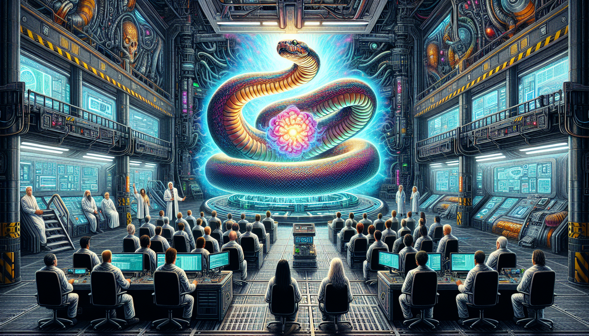

Python and the Future of AI
Python is quickly becoming the go-to programming language for Artificial Intelligence (AI) and Machine Learning (ML) projects. With its simple and easy-to-learn syntax, Python has become a popular choice among developers for building intelligent applications.
One of the main reasons why Python is so widely used in the field of AI is because of its extensive libraries and frameworks specifically designed for machine learning and data analysis. Libraries like TensorFlow, Keras, and PyTorch have made it easier for developers to build and train complex neural networks and algorithms. Moreover, the integration of Python with other technologies, such as big data and cloud computing, has also made it a powerful tool for AI development.
As the demand for AI and ML continues to grow, it is safe to say that Python will play a crucial role in shaping the future of these technologies. With its user-friendly nature and powerful capabilities, Python is well-positioned to lead the way in the development of intelligent systems and applications. As a Python student, I am excited to see how this language will continue to evolve and contribute to the advancements in AI and ML.